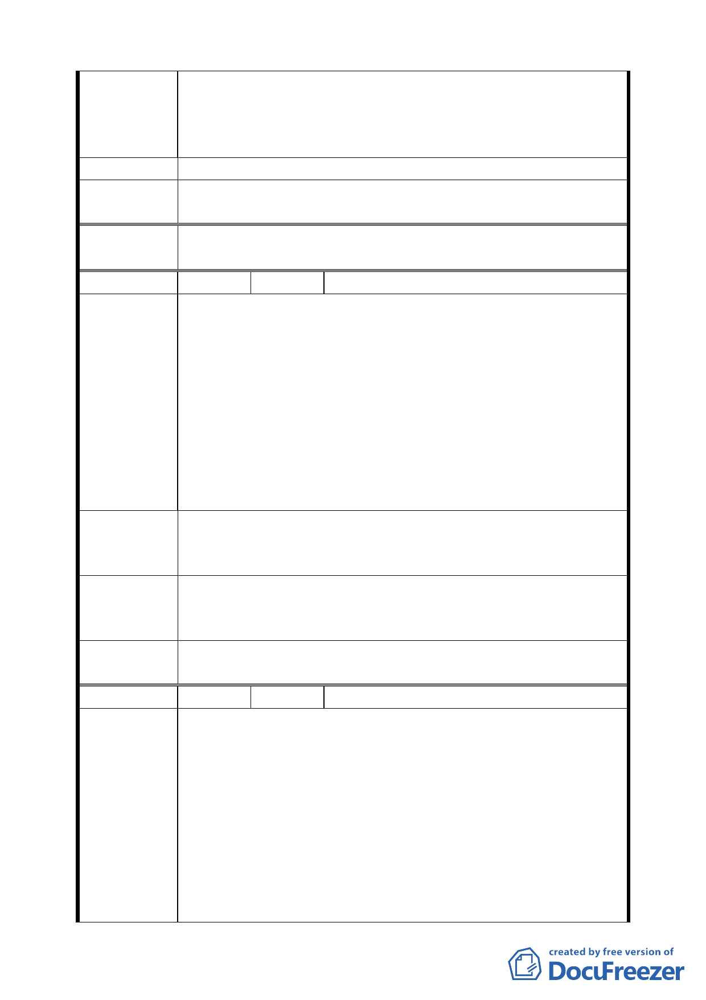

建議位置：北投區振興段 4 小段 652 地號（北投區東華街 2
段 102 巷）
陳 情 理 由 建議理由：北投區東華街 2 段 102 巷全部已成為既成道路二
十餘年，一直為實際道路性質之使用。
建 議 辦 法 建請比照石牌其他綠地變更為道路用地。
專 案 小 組 94.4.14 專案小組第十二次審查會議：考量北側綠地、捷運站
結 論 與陽明大學間之銜接，建議維持為綠地。
委 員 會 議 同意依專案小組審查結論辦理。
決議
編 號 ７ 陳情人 林木星
建議位置：台北市北投區振興段 3 小段 8、9 地號土地（門牌
為北投區榮華三路 23 號）
建議理由：其中 9 地號土地被 貴局劃分為都市計畫「綠帶」
用地（詳后附圖所示）已長達二十幾年之久，但至今未見市
政府或相關單位予已徵收開闢，而本人又無法建築使用，於
陳 情 理 由 此次「北投區都市計畫通盤檢討案」公展內容中又維持綠帶
用地之使用分區，此乃嚴重影響本人之所有權權益，故陳請
貴局能將本人綠帶用地予以變更為「住宅區」或是予已徵收
補償；倘若有困難，請核准能將原綠帶用地之容積予以專案
簽辦容積移轉，以維護本人之權益。
期望 貴局能正視此影響民生已久之問題，於此次「北投區
建 議 辦 法 都市計畫通盤檢討案」公展同時，一併尋求衡平方案，以立
民求，不勝感禱！
94.4.14 專案小組第十二次審查會議：同意發展局規劃仍為綠
專 案 小 組 地，唯可供車行及指定建築線；征收補償問題留供市府相關
結 論 單位參辦。
委 員 會 議 同意依專案小組審查結論辦理。
決議
編 號 ８ 陳情人 張曉雲
建 議 位 置：北投區振興段 4 小段 0650-0001 至 0650-0011
地號北側之水利地
建 議 理 由：
一、 本地號所在位置旁之「水利地」與陽明大學相望，僅一
陳情理由
街之兩隔，卻因規劃不良，成為三不管地帶，除有用戶
佔為私有停車位外，雜草叢生，棄物堆置，行人與車兩
爭道，有礙觀膽且危相叢生。
二、 依據「公有閒置土地規劃為鄰里性公園」之精神，此水
利地應於細部計畫中提出建設為公園的方案。但因此地
號所在位置規劃為「陽明醫學院學校用地」，故成為 貴
第 三七 頁，共 49 頁